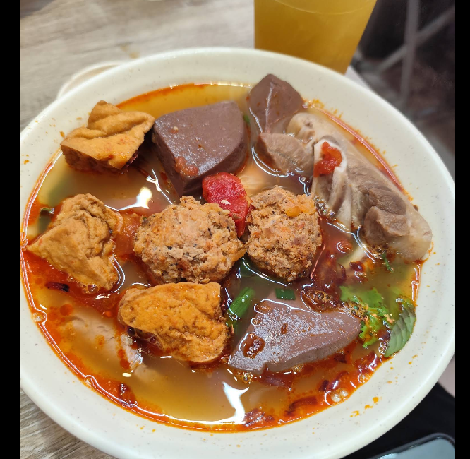
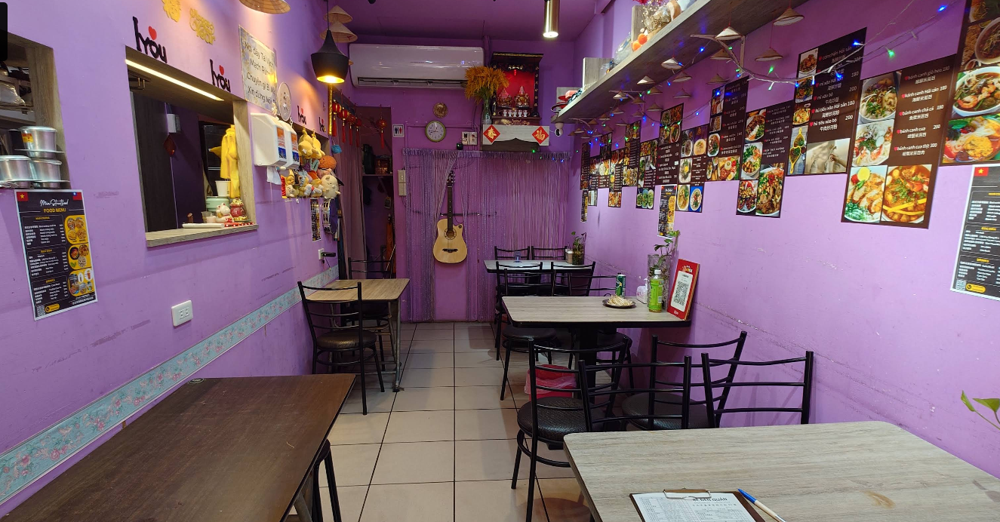
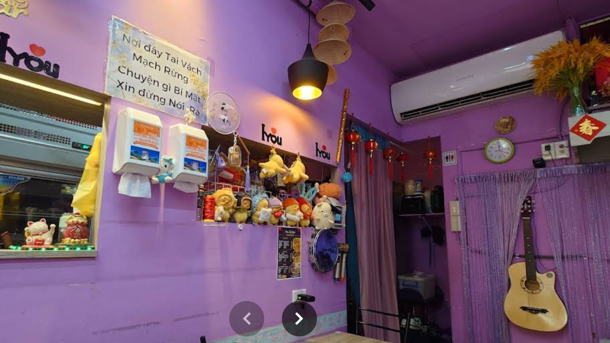
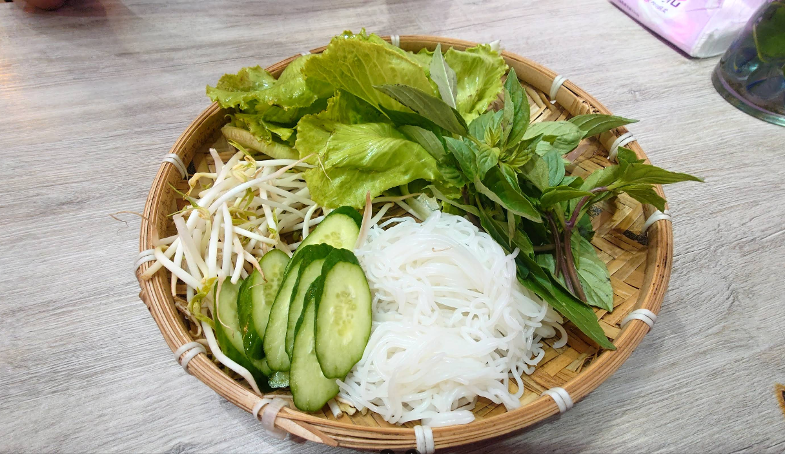
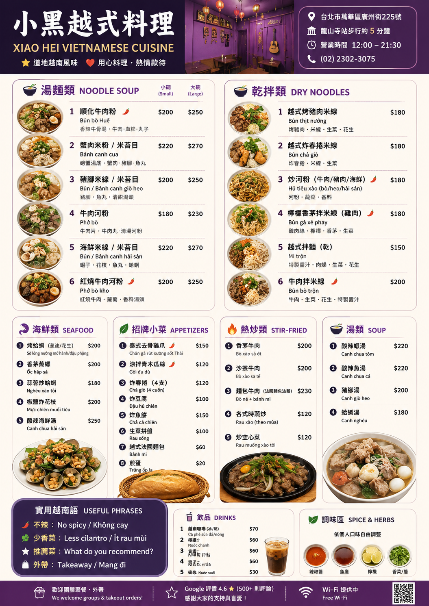

Bún bò Huế
順化牛肉粉 / 豬腳湯粉
紅油香氣、牛肉與豬腳配料，適合想吃重口味湯粉的人。
約 NT$180–220
小黑越式料理是一間小而真實的越南餐館。大碗湯粉、香草米線、海鮮小菜與熱情老闆娘，讓在地人、越南朋友與國際旅人都能吃到接近越南當地的味道。




這裡的魅力在於「真」。紫色小店、越南文菜單、香草與魚露香氣、大碗熱湯與豐富配料，形成一種台北少見的越南日常感。適合想探索龍山寺周邊、華西街與萬華老城文化的旅人。
先點一碗招牌湯粉，再加一份海鮮小菜與越式乾拌米線。若不熟悉越南文菜單，可直接給店員看照片點餐；想要清淡、不要辣、不要香菜，也建議一開始就說清楚。
🌶️ 不辣：No spicy / Không cay
🌿 少香菜：Less cilantro / Ít rau mùi
⭐ 推薦菜：What do you recommend?
🥡 外帶：Takeaway / Mang đi

「菜都滿特別的，老闆娘很親切，特地問我們吃的習慣嗎？」
— Local Guide「店內多為越南顧客，足以證明口味應該有一定水準。」
— Joe Chen「老闆超熱情，分量也很大，順化牛肉麵、豬蹄麵都很好吃。」
— Vietnamese guest深受越南客人喜愛的家常料理與道地風味。
新鮮香草、蔬菜與豐富配料，讓每一碗都更有層次。
小店溫暖親切，適合旅人、在地人與朋友聚餐。
靠近龍山寺與萬華老城，是探索台北越南味的好選擇。